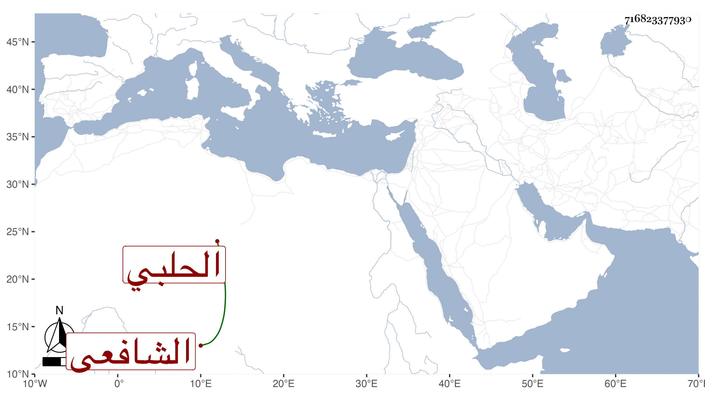

0902Sakhawi.DawLamic.ITO20230111-ara1.EIS1600.716823377930
Biography ID: 716823377930
259
عمر بن أبي بكر بن محمد بن أحمد بن محمد بن عبد القاهر بن هبة الله بن عبد القاهر بن عبد الواحد بن هبة الله بن طاهر بن يوسف الزين أبو حفص بن الشرف بن التاج أبي المكارم بن أبي المعالي الحلبي الشافعي ويعرف كسلفه بابن النصيبي ، وكان رئيسا من بيت كبير معدودا في الأعيان مع الثروة وحسن الخلق والخلق والكتابة الفائقة والمحاضرة الحسنة ، سمع الحديث وحدث بل ودرس بالسيفية للشافعية وولي ببلده قضاء العسكر وكذا الحسبة مرارا مسئولا في ذلك وحمدت مباشرته وعفته وحرمته ، مات بعد الفتنة بأيام في ربيع الأول سنة ثلاث عن خمس وخمسين شهيدا ، ذكره ابن خطيب الناصرية ثم شيخنا في أنبائه باختصار .
